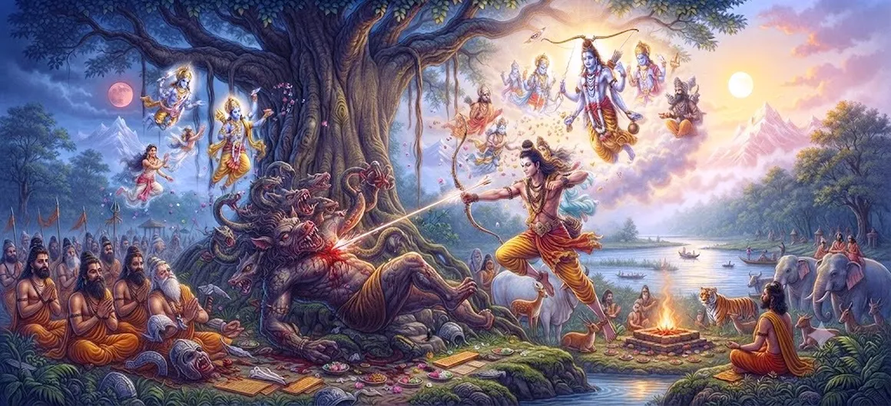

The Demon Muka Is Killed
Chapter 39 of the Shatarudra Samhita describes the episode in which the demon Muka is killed. The story moves from Arjuna's disciplined penance into a decisive encounter that clears an obstacle before the greater Kirata–Arjuna episode unfolds.
Muka's appearance introduces a significant challenge, while Arjuna's previous austerity provides the discipline and readiness needed to face the situation. The episode joins spiritual preparation with courageous action.
With Muka defeated, the sacred narrative advances toward the next stage, the meeting and dialogue between Kirata and Arjuna.
Chapter 39 Highlights
The Appearance of Muka
The chapter turns from Arjuna's penance toward the threatening appearance of the demon Muka.
Arjuna's Readiness
Arjuna's preceding austerity gives context to his readiness when the conflict arises.
The Demonic Obstacle
Muka represents an obstacle that must be confronted before the sacred narrative can proceed.
The Confrontation
The encounter between Arjuna and Muka becomes a decisive moment in the unfolding story.
Divine Narrative Unfolds
The episode prepares the transition toward the greater Kirata episode involving Shiva.
Path Toward the Kirata Dialogue
With Muka's episode resolved, the narrative moves toward the meeting and dialogue between Kirata and Arjuna.
Core Topics in This Chapter
The Appearance of Demon Muka
The sacred narrative moves from Arjuna's prolonged penance to the appearance of the demon Muka. His arrival introduces a disruptive force at the very moment when Arjuna has completed an important period of spiritual preparation.
The Conflict with Muka
Muka's presence creates a direct conflict that demands Arjuna's attention. The episode places the disciplined ascetic-warrior in a situation where spiritual steadiness and heroic readiness must work together.
Arjuna's Response
Arjuna responds to the threatening situation with the alertness expected of a warrior. His previous penance provides the inner discipline that supports decisive action without abandoning his larger spiritual purpose.
The Killing of Muka
The conflict reaches its decisive point with the killing of Muka. The demon's defeat removes an immediate obstacle and allows the sacred narrative to move toward the more significant encounter that follows.
Spiritual and Narrative Significance
The episode can be understood as a transition from preparation to encounter. Arjuna's penance has cultivated steadiness, while the defeat of Muka clears the immediate obstacle before the unfolding Kirata narrative.
Preparation for the Kirata–Arjuna Dialogue
Chapter 39 naturally prepares the reader for the next stage of the story: the meeting and dialogue between Kirata and Arjuna. The events surrounding Muka therefore serve as an important bridge in the sacred sequence.
Key Teachings of Chapter 39
Face Obstacles with Steadiness
Spiritual preparation should remain active and courageous when unexpected obstacles arise.
Keep Discipline in Action
The discipline cultivated in solitude should guide conduct when circumstances become demanding.
Remove Inner Obstacles
The defeat of an external obstacle can also remind the seeker to confront fear, distraction, and weakness within.
Remember the Higher Purpose
Even during conflict, a seeker should remain connected to the deeper purpose behind the journey.
Courage with Restraint
True courage is not uncontrolled aggression but purposeful action guided by discipline.
Prepare for the Next Revelation
The resolution of one obstacle can open the way to a deeper spiritual encounter.
Spiritual Reflection
The killing of Muka can be contemplated as a transition from preparation to encounter. Arjuna's penance has cultivated discipline and inner steadiness, and the removal of the immediate obstacle opens the way for the next sacred revelation. The episode reminds the seeker that spiritual discipline must be joined with courage, clarity, and readiness to act according to one's duty.
Living the Message
When an unexpected obstacle appears, pause before reacting. Draw on discipline and clarity rather than fear or confusion.
Use daily spiritual practice to build the inner steadiness needed for difficult moments. Prayer, meditation, study, and remembrance can strengthen this foundation.
After overcoming one difficulty, do not lose sight of the larger purpose. Let each resolved obstacle become preparation for the next stage of growth.
Key Spiritual Concepts
The demon whose appearance creates the central conflict of this chapter.
Disciplined spiritual austerity that has prepared Arjuna for the events that follow.
Heroic strength, courage, and readiness to act when duty demands it.
Righteous conduct and responsibility appropriate to one's sacred duty.
The hunter form associated with Shiva in the unfolding Arjuna episode.
A firm resolve that keeps a seeker aligned with a chosen higher purpose.
Chapter Summary
Shatarudra Samhita Chapter 39 presents the episode of the demon Muka and his defeat. The story follows Arjuna's penance and places him in a decisive conflict that requires both readiness and disciplined action. The killing of Muka removes an immediate obstacle and advances the sacred sequence toward the forthcoming Kirata–Arjuna dialogue. Read together with the preceding chapter, this episode shows the movement from inner preparation to outward action and then toward divine encounter.
Frequently Asked Questions
1. What is the main subject of Shatarudra Samhita Chapter 39?
Chapter 39 describes the killing of the demon Muka and the sacred events that continue the narrative following Arjuna's penance.
2. Who is Muka?
Muka is the demon whose appearance creates a significant conflict in the narrative involving Arjuna and the unfolding Kirata episode.
3. How is Muka connected with Arjuna?
Muka's encounter with Arjuna becomes part of the sequence of events immediately following Arjuna's penance and leading toward the Kirata–Arjuna episode.
4. What does the killing of Muka signify?
The episode marks the removal of a major obstacle and advances the sacred narrative toward the encounter and dialogue between Arjuna and Shiva in the Kirata form.
5. How does Chapter 39 connect with Shiva's Kirata manifestation?
The killing of Muka forms part of the narrative progression that leads to the appearance of Shiva as the Kirata and the ensuing dialogue with Arjuna.
6. What comes after Chapter 39?
The next chapter is The Kirata–Arjuna Dialogue.
“When discipline meets courage, obstacles become steps toward the next sacred purpose.”
Continue Through Shatarudra Samhita
Chapter 39 describes the killing of the demon Muka and prepares the narrative for the Kirata–Arjuna dialogue.